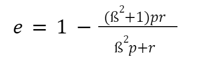
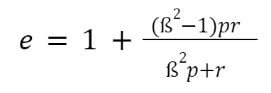
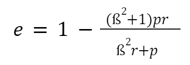
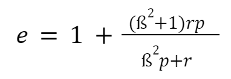

Was ist die Formel für recall? || r = a / a+c || r = a / a + b ** r = a / a-c
Welche Aussagen über Precision und Recall sind wahr? (P1,R1) gilt besser als (P2,R2) wenn: || R1 >= R2 und P1 > P2 ** R1 > R2 und P1 >= P2 || R1 <= R2 und P1 < P2 ** R1 < R2 und P1 >= P2 ** R1 > R2 und P1 < P2
Welches ist die Formal für das Kombinationsmaß e-Maß? ||  ||  **  ** 
Welchen Wertebereich hat das e-Maß und wie ist dieser zu interpretieren? || Je niedriger desto besser. ** 0 bis 1 || -1 bis +1 ** Alle positiven rationalen Zahlen. ** Je höher desto besser.
Wozu dient die Relevanz? || Relevanz ist ein entscheidenes Kriterium für die Effektivitätsmessung || Entscheidenes Kriterium für den Benutzerstandpunkt
Welche Aussagen über Precision und Recall sind korrekt? || Je höher die Werte, desto besser das Ergebnis|| Je niedriger die Werte, desto besser das Ergebnis ** Zur Beurteilung sind die Werte von Precision und Recall unerhblich
Welche Eigenschaften sind der Relevanz zuzuordnen? || Relevanz ist schwer auf eine binäre Skala abzubilden ** Relevanz ist Situationsabhängig || Relevanz ist gut messbar ** Relevanz ist eine absolute Größe
Welchen Wertebereich haben Precision und Recall? || 0 bis 1 || 1 bis 10 ** 0.2 bis 0.8 ** -1 bis 1
Welche Aussage ist bezüglich der Nullantwort korrekt? || Negative Nullantwort: a=0, b>0, c>0 Es werden keine relevanten Dokumente geliefert, obwohl es welche gäbe.
In diesem Fall wird nur der Zähler zu 0, und die Maße lassen sich berechnen. Werte: r=0, p=0 || Positive Nullantwort: a=0, b>0, c>0 Es werden keine relevanten Dokumente geliefert, obwohl es welche gäbe.
In diesem Fall wird nur der Zähler zu 0, und die Maße lassen sich berechnen. Werte: r=0, p=0
Welche Werte sind Recall und Precision bei der Leeren Antwortmenge mit relevanten Dokumenten zuzuordnen? || r=0, p=0/p=1 || r=1, p=0 ** r=1, p=1
Was genau sagt die Relevanz aus? || Die Übereinstimmung von Anfrage und Dokument || Die Anfrage ist besonders wichtig ** Die Anfrage ist nur in einem bestimmten Kontext wichtig
Von was ist die Relevanz maßgeblich abhängig? || Vom Informationsbedürfnis des Nutzenden || Relevanz ist nicht abhängig ** Es kann keine genaue Aussage getroffen werden, von was die Relevanz abhängig ist
Was sagt der Precisionwert aus? || Precision ist die Genauigkeit eines Systems relevante Dokumente zu finden || Precision gibt Auskunft über die Trefferquote eines Systems ** Precision kombiniert Genauigkeit und Trefferquote
Warum ist die Betrachtung des Benutzerstandpunktes wichtig? || Der Benutzerstandpunkt gibt Auskunft darüber nach welchen Kriterien Suchende bei der Sichtung der Ergebnisse abbrechen || Der Benutzerstand ist ein systemseitiges Evaluierungsmaß und gibt Auskunft über Standpunkte von Dokumenten ** Der Benutzerstandpunkt bewertet ein System global nach verschiedenen Kriterien